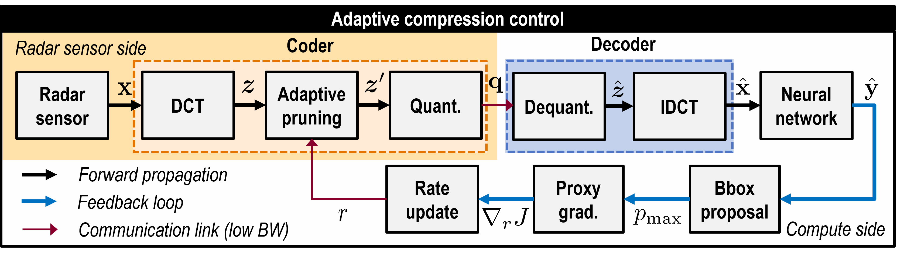
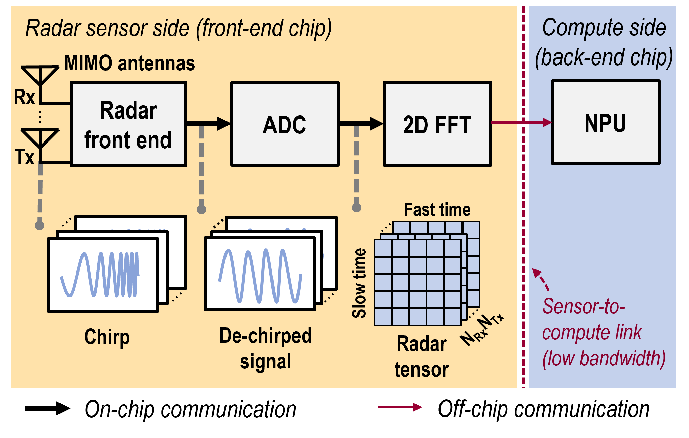
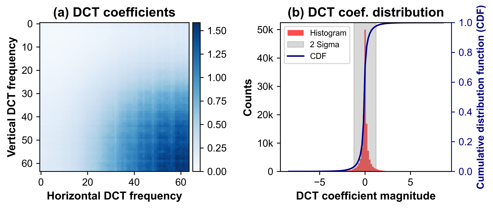
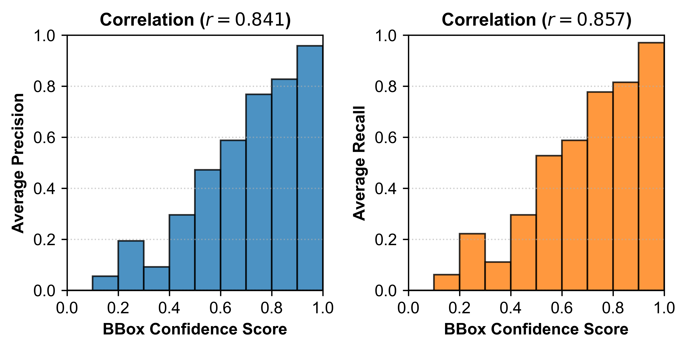
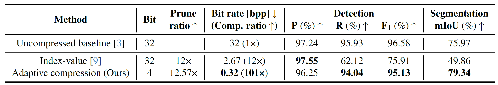
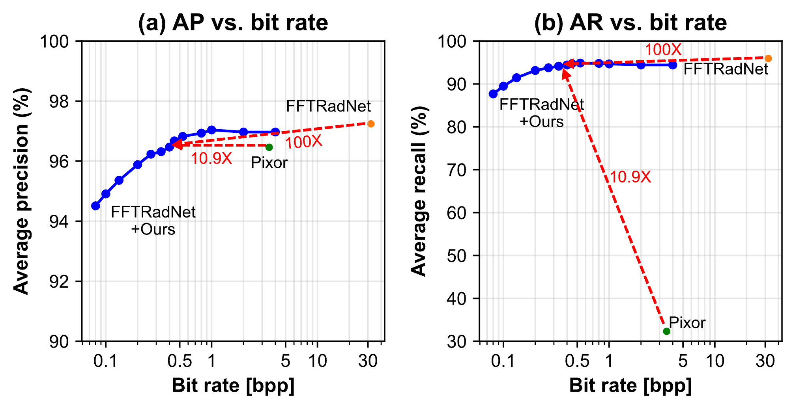
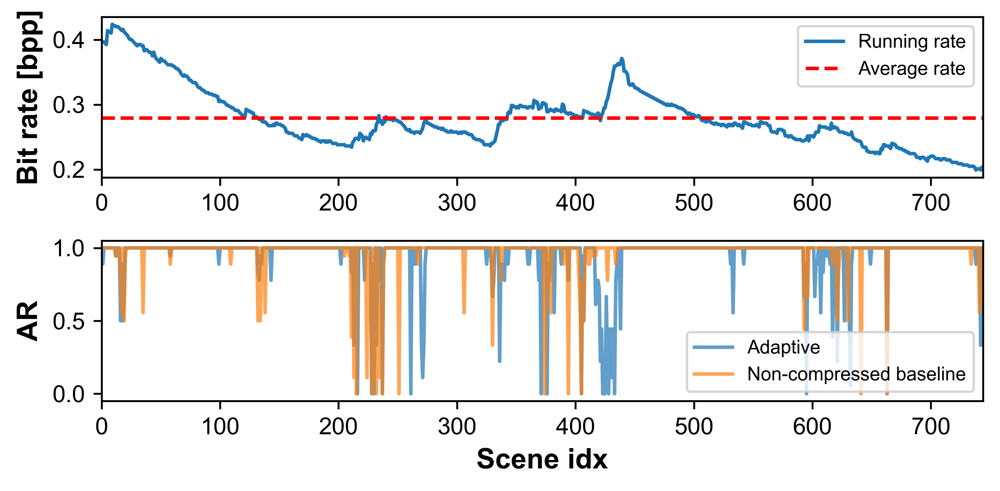
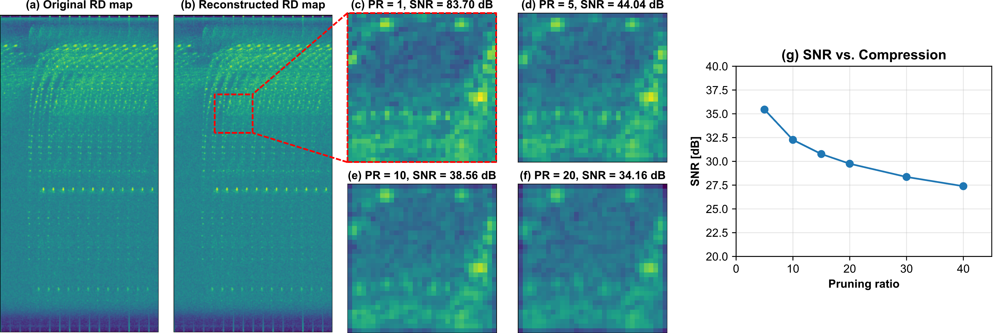
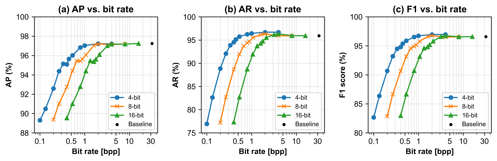
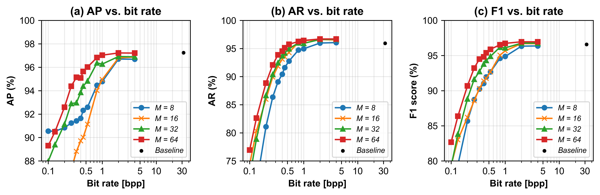

Proposed Method

Our proposed method introduces a feedback loop in which the proxy gradient is computed from the detection outputs to update the compression ratio adaptively. This avoids the need for backpropagation through the communication channel. The radar tensor is compressed using DCT, adaptive spectral pruning, and scaled quantization, then transmitted to the compute side. In an object-detection setting, the neural network produces detection results from decompressed radar data cubes. The loop uses proposed bounding boxes to estimate the proxy gradient, thereby updating the pruning rate.
Bandwith Bottleneck in Radar Systems

An FMCW radar transmits linearly swept‑frequency chirps. The incoming echo is mixed with a copy of the transmitted chirp at the receiver, yielding a de‑chirped intermediate‑frequency signal that the ADC digitizes to form a raw radar tensor. Successive FFTs along the fast‑time and slow‑time axes convert this tensor into a range–Doppler cube. The large, raw radar tensor is transferred to the NPU over the power-hungry sensor-to-compute link for network inference.
Motivation for Spectral Pruning and Quantization

Figure (a) shows the distribution of the DCT coefficients from the raw radar tensor, computed block-wise with $M=64$. Here, we calculate the average coefficient magnitude $\mathbb{E}_{c,b}\big[|\boldsymbol{z}_{c,b}|\big]$ over all channels $c$ and blocks $b$. This reveals a strong concentration of energy in the high-frequency bins, highlighting the opportunity for aggressive pruning. Figure (b) presents the histogram of these coefficients, wherein its pronounced peak near zero highlights the potential for quantization.
Motivation for Surrogate Objective Choice

The figure reveals a strong positive correlation between bounding-box confidence and object-detection performance, thereby justifying the use of confidence as a surrogate objective when optimizing detection accuracy. In the RADIal dataset, precision and recall are evaluated at discrete confidence thresholds from 0.1 to 0.9. This thresholding scheme explains the staircase-like correlation that appears in the results.
Compression on RADIal

We compare the detection and segmentation performance of adaptive rate control with prior work on the RADIal test set using FFTRadNet as the backbone. Our adaptive rate control achieves 101x compression on average while maintaining the performance close to the baseline. 'P' and 'R' respectively stand for precision and recall. We highlight in bold the best-performing result among methods other than the baseline.
Rate-accuracy Tradeoff

This illustrates the trade-off between the bit rate and the detection performance metrics: AP and AR. While it depicts the obvious rate-accuracy tradeoff, our compression scheme achieves a 100x reduction in the radar feature map size while incurring a ~1%p decrease in performance compared to FFTRadNet. Compared with Pixor, our method achieves higher precision and markedly higher recall.
Online Adaptation

The online adaptation adjusts the bit rate based on the confidence gradient. The figure above illustrates this scheme, where the pruning ratio is increased from the initial starting point. The bit rate fluctuates over time, though it surges at some points. Here, it is expected that the controller decreases the pruning ratio to compensate for the AR drop. It achieves an average bit rate of 0.279 bpp with 8-bit quantization, yielding a 115x compression with AR of 93.91%.
Qualitative Comparisons

Networks are trained on raw radar tensors, visualized as range-Doppler (RD) images, along with ground-truth labels for freeway segmentation and vehicle detection. Camera images only provide contextual reference for the scene. RD images map Range to the $y$-axis and Doppler to the $x$-axis. We highlight the detected car in red and the segmented map in green in the bird's-eye-view visualization. Notably, the compressed RD outperforms the uncompressed baseline.
Qualitative visualization on range-Doppler map

(a) Original and (b) reconstructed RD map for a single channel with 8-bit quantization and a pruning ratio of 1. (c)-(f) Magnified 64x64 patches at pruning ratios of $\{1,5,10,20\}$, respectively. (g) SNR vs. bit rate trade-off.
Effect of quantization bit width and block length $M$ on RADIal


(a) Average precision, (b) average recall, and (c) F1 score against the bit rate modulation from pruning. (Above) We observe that quantization up to 4 bits does not affect the performance compared to that of 8-bit and 16-bit. We use the FFTRadNet on the RADIal dataset without any fine-tuning with the block length $M=64$ for all cases. (Below) We observe that compression with a larger block length generally performs better. We use the FFTRadNet on the RADIal dataset without any fine-tuning with 4-bit quantization for all cases.
BibTeX
@inproceedings{park2026adaradar,
title={AdaRadar: Rate Adaptive Spectral Compression for Radar-based Perception},
author={Park, Jinho and Chun, Se Young and Seok, Mingoo},
booktitle={Proceedings of the IEEE/CVF Conference on Computer Vision and Pattern Recognition},
year={2026},
}